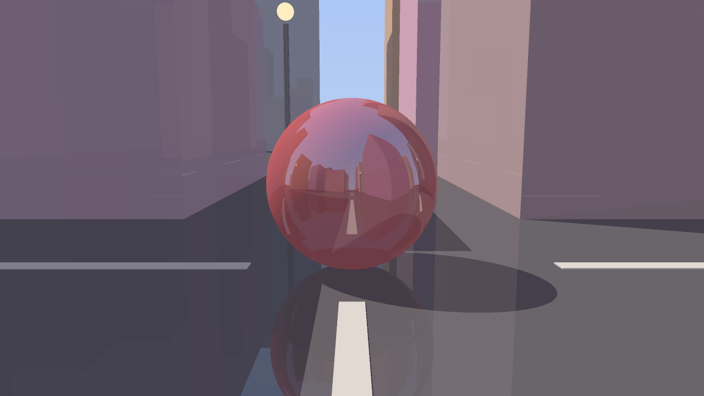
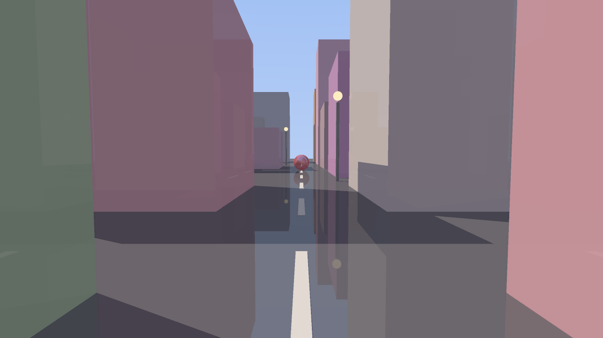
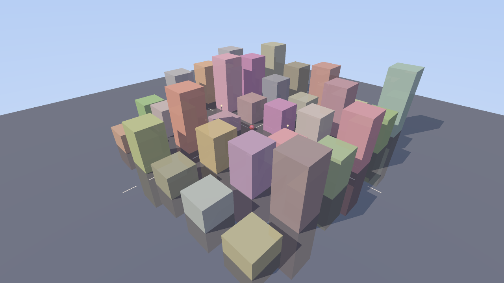
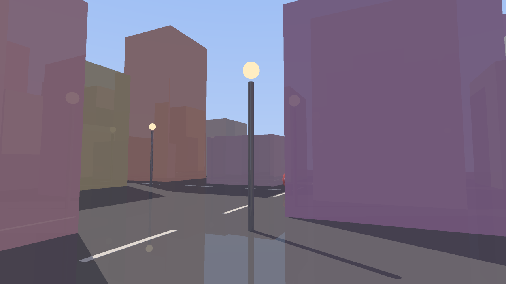
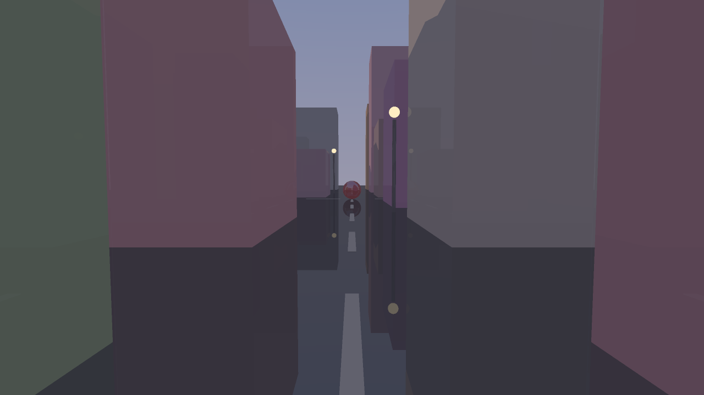

1. Overview
The aim of the project was to learn a technique not covered in class by reading a research paper, implement it, and show its effect in a working program. Ray tracing gives correct shadows and reflections almost for free, but a naive ray tracer tests every ray against every object, which is too slow for interactive use. Amanatides and Woo [5] describe how to step a ray through a uniform grid using only additions and comparisons. This project uses that method to make a CPU ray tracer interactive.
The program:
- builds a city block: a ground plane, road markings, 33 buildings of random height and colour, a mirror-like sphere and four lamp posts with glowing bulbs;
- ray traces every frame on the CPU with shadows, point lights, a sun, a sky gradient and reflections;
- opens a window (GLFW or FreeGLUT) in which you walk around with the mouse and keyboard;
- has two headless modes:
--snapshotwrites one image to a BMP file and--benchmeasures the frame rate.
2. Building and running
Install GLFW (preferred) or FreeGLUT, then run from the project root:
make # builds build/live-glfw or build/live-freeglut make run-live # build and open the window ./build/live-glfw --snapshot out.bmp # one 640x360 frame, no window ./build/live-glfw --bench 60 # 60 frames along the road, prints FPS doxygen Doxyfile # regenerates docs/api
| Input | Action |
|---|---|
| Mouse | Look around |
| W / A / S / D | Walk forward, left, back, right (hold Shift to run 3× faster) |
Scroll, + / - | Zoom (field of view 20°–100°) |
1 / 2 / 3 | Render size 320×180, 480×270, 640×360 |
R / Esc | Reset camera / quit |
3. Algorithm
3.1 Recursive ray tracing
The renderer follows Whitted's model [1]. For each pixel a primary ray is sent from the eye through the pixel. The
nearest surface hit gives a point p with normal n. From p the program sends a
shadow ray towards each light, to find out whether the light is blocked, and, if the surface is
reflective, a reflected ray that is traced the same way. A ray that hits nothing takes the sky colour,
a gradient from the horizon colour to the zenith colour. Recursion stops after two reflections (MAX_DEPTH = 2).
Shading is the ambient and diffuse part of the Phong illumination model [2], without the specular term. For a surface of colour c:
C = c·A ambient + c·S·k_s·max(0, n·l_sun) if the sun is visible + Σ_i c·L_i·k_i·max(0, n·l_i) / (1 + 0.08·d_i²) for each visible lamp i C' = (1 − r)·C + r·trace(reflected ray) if reflectivity r > 0
A is the ambient colour, S and Li are light colours, l are unit vectors
towards the lights and di is the distance to lamp i. The reflected direction is
r = d − 2(d·n)n. The result is clamped to [0, 1] and gamma corrected with exponent 1/2.2.
| Primitive | Intersection method |
|---|---|
| Axis-aligned box | Slab method [3]: intersect the ray with the three pairs of parallel planes and keep the overlap of the three intervals; the last entering plane gives the normal. Rays parallel to a slab are handled explicitly instead of relying on IEEE infinities, the robustness case discussed by Williams et al. [4]. |
| Sphere | Quadratic |o + t·d − c|² = r²; smallest root larger than a small ε. |
| Cylinder (vertical) | Quadratic in x and z for the side, height check, and two cap discs. |
| Cone (vertical) | Quadratic for the side (radius shrinks linearly to the apex), height check, base disc. |
3.2 The paper: fast voxel traversal (Amanatides and Woo, 1987)
Testing a ray against all N objects costs O(N) per ray. A uniform grid [6] splits space into equal cells and stores in each cell the objects that overlap it, so a ray only needs the objects in the cells it passes through. The question is how to list those cells quickly and in order along the ray, so the search can stop at the first hit. Amanatides and Woo [5] use an incremental algorithm similar to a line-drawing DDA. For each axis they keep:
step: +1 or −1, the direction in which the cell index changes along that axis;tMax: the ray parameter t at which the ray crosses the next cell boundary on that axis;tDelta: how much t grows to cross one whole cell on that axis (cell size / |d|).
Each step moves to the neighbouring cell on the axis with the smallest tMax and adds that axis's
tDelta to it. There are no multiplications or divisions inside the loop.
loop:
test objects in cell (ix, iz); keep nearest hit t_hit
t_next = min(tMaxX, tMaxZ)
if t_next ≥ t_hit or the ray left the grid: stop
if tMaxX < tMaxZ: ix += stepX; tMaxX += tDeltaX
else: iz += stepZ; tMaxZ += tDeltaZ
Adaptation used in this project. A city is mostly flat, so the algorithm is used in two dimensions over the x–z plane. Each cell is a vertical column of 4 m × 4 m, and the grid has 36 × 36 cells covering −72 m to +72 m. Changes from the paper:
- Before walking, the ray is clipped to the grid square with a 2D slab test, so the walk starts at the grid edge when the camera is outside it.
- Objects with a footprint wider than 20 m (the ground) are kept in a global list tested for every ray, instead of being copied into every cell.
- The paper's "mailbox" (to avoid testing an object twice) is not used. Objects spanning several cells may be tested again, which is cheap here and does not affect correctness: the walk stops only when the next cell begins beyond the best hit.
- Shadow rays use the same walk but return at the first blocking object, which is all a shadow test needs.
3.3 Parallel rendering
Pixels are independent, so the image is split into rows. A pool of POSIX threads takes the next free row from a shared counter protected by a mutex, renders it and takes another. Rows near the horizon cost more than sky rows; this dynamic hand-out balances the load automatically.
4. Implementation
The program is one C11 file, scratch_raytracer/live.c, built by the Makefile. It depends only on
the C standard library, POSIX threads, OpenGL (to show the image) and GLFW or FreeGLUT. Every function, type, constant and
global is documented with Doxygen comments; the generated reference is in api/.
Part of live.c | Main functions | Purpose |
|---|---|---|
| Vector maths | V, add, sub, dot, cross, norm, mix | Helpers on the V3 struct. |
| Objects | add_obj, add_lamp | Fixed arrays of objects (max 512) and lamps (max 16). |
| Intersections | hit_box, hit_sphere, hit_cyl, hit_cone, hit_obj | Ray–primitive tests returning distance and normal. |
| 2D grid | build_grid, traverse, closest, occluded | Builds the grid and walks it (Amanatides–Woo). |
| Shading | sky, trace, update_light | Lighting, shadows, reflections, sky and sun settings. |
| Scene | build_scene, frand | Generates the city with a fixed random seed. |
| Camera | cam_reset, current_view | Yaw/pitch camera and its orthonormal basis. |
| Renderer | render_row, worker, render_frame | Multithreaded row-by-row rendering. |
| Output | write_bmp, upload_and_draw | BMP writer and OpenGL texture display. |
| Window back ends | run_window and callbacks | GLFW or FreeGLUT input and main loop, chosen at compile time. |
| Headless modes | run_snapshot, run_bench, main | Command-line entry points. |
Scene
build_scene() creates 71 objects and 4 lamps: a dark, slightly reflective 140 m × 140 m ground box; 28 thin
boxes for the dashed centre lines of two crossing roads; 33 buildings on a 6 × 6 layout of 12 m blocks (each block left
empty with probability 0.2), 7 m wide and 4–20 m tall; a red sphere with reflectivity 0.3; and four lamp posts with
emissive bulbs and a point light under each. A fixed random seed makes every run identical.
Grid traversal in code
| Paper | traverse() | Meaning |
|---|---|---|
| stepX, stepZ | sx, sz | ±1 direction of travel per axis |
| tMaxX, tMaxZ | tmx, tmz | t at the next cell boundary per axis |
| tDeltaX, tDeltaZ | tdx, tdz | GRID_CELL / |d| per axis |
| X, Z | ix, iz | current cell |
for (;;) {
int c = ix * GRID_N + iz;
for (int k = 0; k < cell_n[c]; k++) { ... test objs[cell_obj[c][k]] ... }
double tex = tmx < tmz ? tmx : tmz; /* where this cell ends */
if (tex >= best || tex > gexit) break; /* hit is closer, or left grid */
if (tmx < tmz) { ix += sx; tmx += tdx; }
else { iz += sz; tmz += tdz; }
if (ix < 0 || ix >= GRID_N || iz < 0 || iz >= GRID_N) break;
}
With any = 0 the function returns the nearest hit (camera and reflection rays); with any = 1 it
returns at the first blocking object and ignores emissive bulbs (shadow rays).
Frame loop and window back ends
Each frame, handle_move() moves the camera by the held keys scaled by frame time; render_frame()
starts one thread per core (up to 64) that take rows from the shared counter; upload_and_draw() copies the image
into an OpenGL texture and draws it on a quad that fills the window. V-sync is off so the title shows the true render speed.
Both window back ends provide the same small interface (win_time, win_framebuffer, win_swap, win_set_title)
and call the shared look(), zoom() and do_action(). The Makefile finds
whichever library is installed on macOS, Linux or Windows (MSYS2).
5. Results
All images and numbers were produced by the project code on an Apple M3 (8 cores: 4 performance, 4 efficiency),
macOS, cc -O2. Figure 3 comes from the program's own --snapshot mode. The gallery and the tables in
5.2–5.4 come from tools/experiments.c, which includes live.c unchanged and only
sets the camera, image size and thread count; its raw output is in tools/results.txt.
./build/live-glfw --snapshot out.bmp: the starting camera view at 640 × 360 (render size 3),
one sample per pixel. Rendered in 60.6 ms.5.1 Gallery
1280 × 720, 2 × 2 samples per pixel, 0.4–0.8 s per image on 8 cores.




update_light(0.12)): lower ambient, bluer sky, brighter lamps.5.2 Effect of the grid (the paper's method)
The same 640 × 360 frame was rendered with the grid and then with every object moved to the global list, so every ray tests all 71 objects. Average of 10 frames, 8 threads.
| Method | Time per frame | Frame rate | |
|---|---|---|---|
| Test every object | 198.7 ms | 5.0 FPS | |
| Grid traversal | 54.4 ms | 18.4 FPS |
The grid makes the frame 3.65 times faster with only 71 objects. The gain grows with scene size, since a grid walk touches only the cells along the ray while brute force grows linearly with the number of objects.
5.3 Multithreading
| Threads | Time per frame (640 × 360) | Speed-up | |
|---|---|---|---|
| 1 | 222.0 ms | 1.00× | |
| 2 | 112.8 ms | 1.97× | |
| 4 | 63.5 ms | 3.50× | |
| 8 | 53.7 ms | 4.13× |
Scaling is almost linear up to 4 threads. From 4 to 8 the gain is small because the M3's other four cores are slower efficiency cores; the mutex is taken only once per row (360 times per frame).
5.4 Interactive frame rate and anti-aliasing cost
| Render size (key) | Time per frame | Frame rate |
|---|---|---|
| 320 × 180 (1) | 14.3 ms | ≈ 70 FPS |
| 480 × 270 (2, default) | 30.9 ms | ≈ 32 FPS |
| 640 × 360 (3) | 54.1 ms | ≈ 18 FPS |
The program's own benchmark (--bench 60, 480 × 270, walking 24 m down the road) gave 29.7, 29.6 and 29.8 ms per
frame in three runs: about 34 FPS.
| Samples per pixel | Time per frame (640 × 360) | Relative |
|---|---|---|
| 1 | 54.4 ms | 1.0× |
| 4 (2 × 2) | 209.1 ms | 3.8× |
| 9 (3 × 3) | 467.2 ms | 8.6× |
Cost grows in proportion to the samples, so the window uses one sample per pixel and the gallery uses 2 × 2.
6. Issues in coding and how they were handled
| Issue | Cause | Solution in live.c |
|---|---|---|
| Shadow acne | Rounding puts the hit point slightly inside the surface, so the shadow ray hits the same surface. | Secondary rays start from p + 0.001·n; hits closer than EPS = 1e-4 are ignored. |
| Lamps shadowed by their own bulbs | The light sits under an opaque emissive sphere. | Shadow rays skip emissive objects. |
| Wrong normals seen from behind | Normals point outwards, but a ray can hit the back of a face. | The normal is flipped when n·d > 0. |
| Stopping at the first hit in the grid can return the wrong object | An object listed in the current cell can be hit at a point in a later cell, behind a closer object there. | The walk stops only when the next cell boundary is beyond the best hit (tex >= best). |
| Ground plane in every cell | A 140 m object overlaps all 1296 cells. | Objects wider than 20 m go to a global list tested once per ray. |
| Rays from outside the grid | The walk needs a start cell, but the camera may be outside the grid. | The ray is clipped to the grid square first. |
| Unequal work per row | Sky rows are cheap, street rows with reflections are expensive. | Threads take one row at a time from a shared counter. |
| Different window libraries on different systems | Some systems have GLFW, others only FreeGLUT. | Two back ends behind one interface; the Makefile detects which is installed. |
| Shift and mouse capture in FreeGLUT | FreeGLUT reports modifiers only inside key callbacks and cannot hide and lock the cursor. | Run mode is updated on each key event; the pointer is warped back to the window centre. |
| High-DPI screens | The framebuffer is larger than the window on Retina displays. | The viewport uses the framebuffer size. |
| OpenGL deprecation warnings on macOS | Apple marks fixed-function OpenGL as deprecated. | Built with -Wno-deprecated-declarations; the API still works. |
7. Known faults and limitations
- Day–night cycle not included. The proposal planned an animated day–night cycle. The final version
lights the scene once at a fixed sun angle;
update_light()still supports any angle (gallery image e) but nothing animates it. - Fixed grid cell capacity. A cell holds at most 96 objects; beyond that the program prints
grid cell fulland exits. - No bounds checks in
add_obj()andadd_lamp()against the 512-object and 16-lamp limits. - No collision detection. The camera walks through buildings, lamp posts and the sphere.
- Aliasing. One sample per pixel in the window gives jagged edges and flickering road lines.
- Translucent-looking walls. Buildings (0.05) and ground (0.12) are slightly reflective; with flat colours the reflections look like faint ghost images.
- Visible edge of the world. The ground ends at ±70 m with a sharp line against the sky; there is no fog.
- Simple lighting. Hard shadows, no specular term, constant ambient, weak lamp light in daylight, and clamping instead of tone mapping.
- Unused code.
hit_cone()is not used by the scene, the per-thread ray counters are never reported, and the program itself always uses one sample per pixel. - No automated tests. Intersection routines were checked visually only.
8. Possible improvements
- Performance: mailboxing from the paper; a 3D grid or bounding volume hierarchy for non-flat scenes; single precision with SIMD, or a GPU compute shader; low resolution while moving with refinement when still.
- Image quality: Blinn–Phong specular and tone mapping; soft shadows and ambient occlusion; distance fog; window textures on buildings; adaptive anti-aliasing on edges; an animated sun to restore the day–night cycle.
- Robustness: bounds checks and growable grid cells; camera collision with boxes and cylinders; unit tests for each intersection routine.
9. References
- T. Whitted, "An Improved Illumination Model for Shaded Display," Communications of the ACM, vol. 23, no. 6, pp. 343–349, 1980.
- B. T. Phong, "Illumination for Computer Generated Pictures," Communications of the ACM, vol. 18, no. 6, pp. 311–317, 1975.
- T. L. Kay and J. T. Kajiya, "Ray Tracing Complex Scenes," ACM SIGGRAPH Computer Graphics, vol. 20, no. 4, pp. 269–278, 1986.
- A. Williams, S. Barrus, R. K. Morley and P. Shirley, "An Efficient and Robust Ray-Box Intersection Algorithm," Journal of Graphics Tools, vol. 10, no. 1, pp. 49–54, 2005.
- J. Amanatides and A. Woo, "A Fast Voxel Traversal Algorithm for Ray Tracing," in Proceedings of Eurographics 1987, pp. 3–10, 1987. (Main paper.)
- A. Fujimoto, T. Tanaka and K. Iwata, "ARTS: Accelerated Ray-Tracing System," IEEE Computer Graphics and Applications, vol. 6, no. 4, pp. 16–26, 1986.
- P. Shirley and R. K. Morley, Realistic Ray Tracing, 2nd ed. Natick, MA: A K Peters, 2003.
- GLFW documentation, https://www.glfw.org/docs/latest/.
- FreeGLUT project, https://freeglut.sourceforge.net/.
10. Remarks
- What was learned. A good acceleration structure matters more than micro-optimisation: a 2D version of the traversal, about 70 lines of code, made rendering 3.65 times faster even on a small scene. Keeping the loop to additions and comparisons, as the paper does, also keeps it easy to debug.
- Why 2D. A 3D grid would follow the paper exactly, but in a city almost every cell above the rooftops is empty. Vertical columns give the same benefit with less memory and simpler code.
- Reproducibility. The fixed seed and the headless modes mean every image and timing here can be regenerated. Timings will differ on other machines.
- Portability. Built and tested on macOS with GLFW. The
Makefilealso has rules for Linux and Windows (MSYS2) with GLFW or FreeGLUT.
11. Files
| Path | Contents |
|---|---|
scratch_raytracer/live.c | Complete source code with Doxygen comments |
scratch_raytracer/live.md | Developer notes on the source |
Makefile, Doxyfile | Build rules and Doxygen configuration |
docs/documentation.html | This page |
docs/api/ | Doxygen-generated code reference (open api/index.html) |
docs/img/ | Rendered images |
docs/tools/ | Program and raw output used for the Results section |